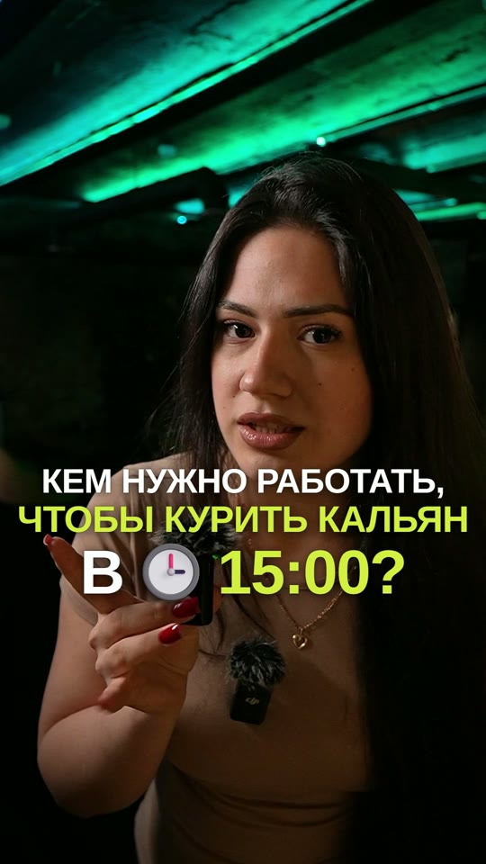
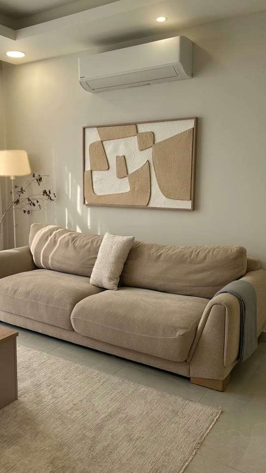
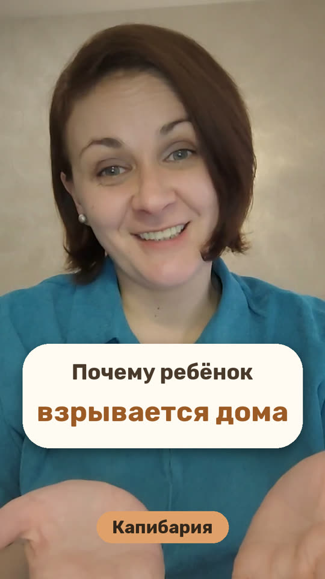
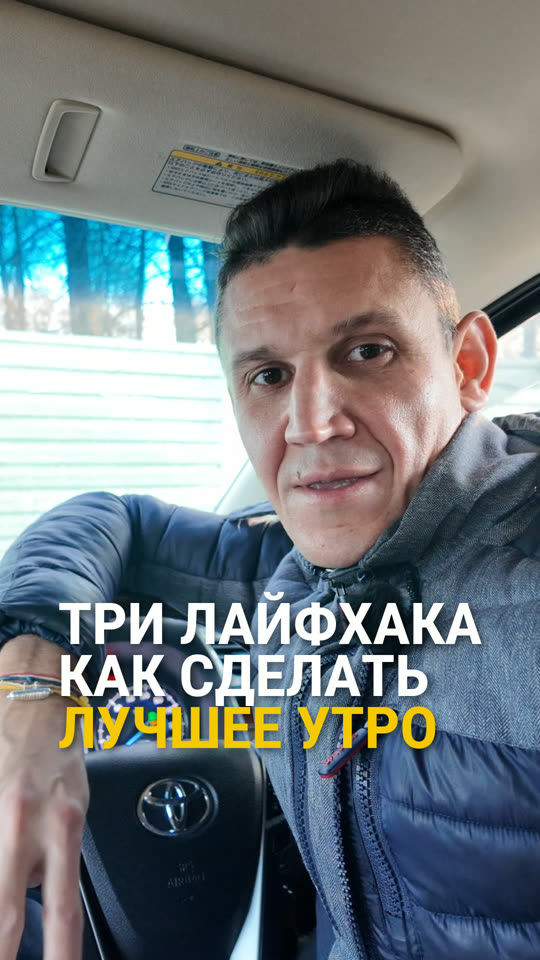
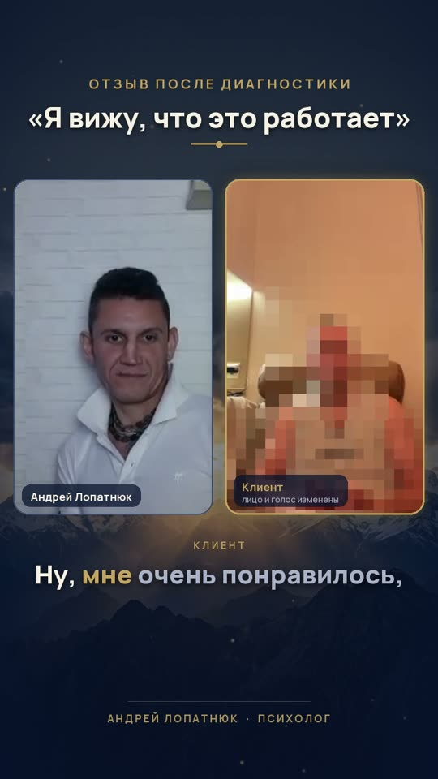
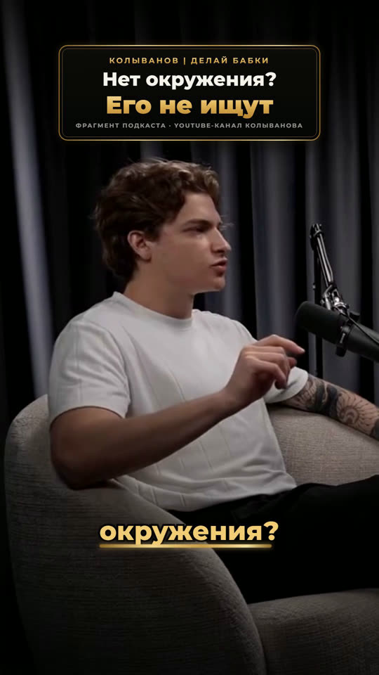
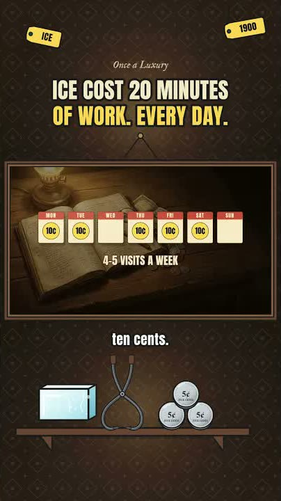
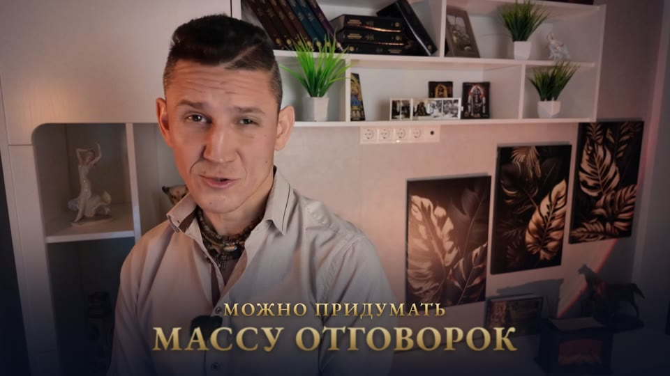
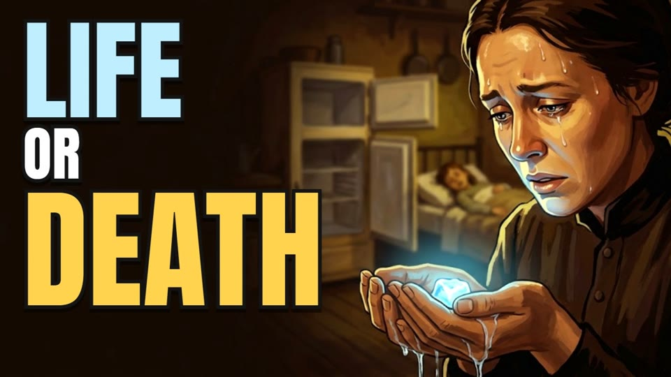
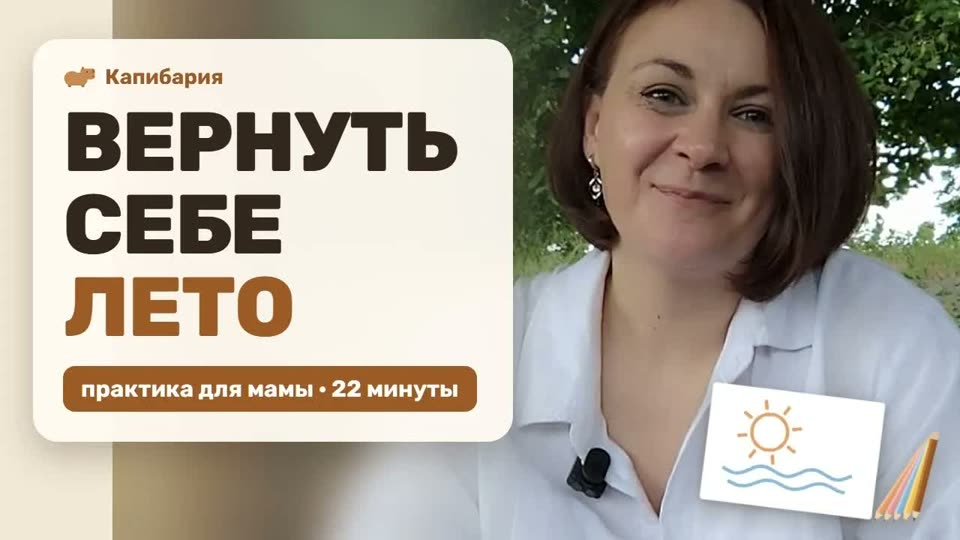

Вертикальные: Reels и Shorts
Нажмите на обложку, ролик откроется здесь же.

1:00 Reels · юмор Опрос гостей лаунж-бара Мемы на стоп-кадрах, плашки над героями, поиск в телефоне, звуки и запиканный мат.
0:08 Reels · интерьер Комната наполняется декором Нейросеть убрала декор с фото, предметы появляются по одному, загорается свет, наезд камеры.
Shorts · 1 200 просмотров Разговорный ролик психолога Субтитры по слову, вставки, обложка.
0:55 Reels Reels психолога Крупные титры, субтитры, музыка, фирменные цвета.
0:34 Кейс из сессии Отзыв клиента после диагностики Два окна как в Zoom, мозаика на лице и изменённый голос. Клиент разрешил публикацию.
0:25 Нарезка Фрагмент подкаста предпринимателя Сильный кусок из длинной записи, плашки и субтитры.
Shorts · английский Shorts из длинного ролика Вертикальная версия главного момента из ролика про холод: анимация, подписи.Горизонтальные ролики
Нажмите на обложку, ролик откроется здесь же.

3:11 Ролик эксперта Мотивирующий ролик об онлайн-академии Золотые фразы под речь, 3D-предметы, ИИ-кадры историй, «рентген» головы, приближения, финальная заставка.
12:04 Документальный · английский Сколько стоил холод для еды в Америке 1900 года Архивные снимки, рисованные сцены, анимация поверх, звук и музыка. Мой канал Once a Luxury.
22:12 Практика психолога «Вернуть себе лето»: практика для мам Длинная запись под голос: спокойный монтаж, звук, обложка.